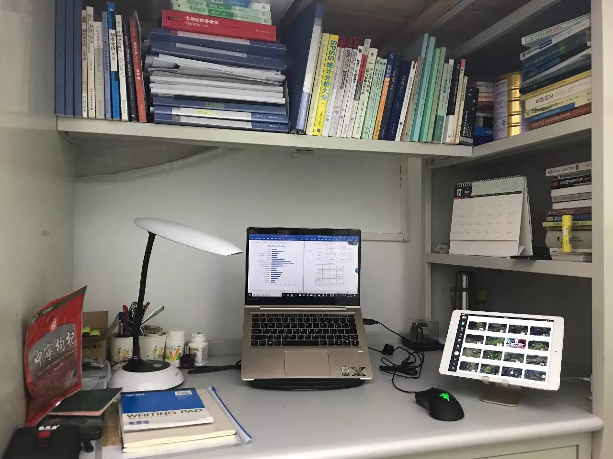
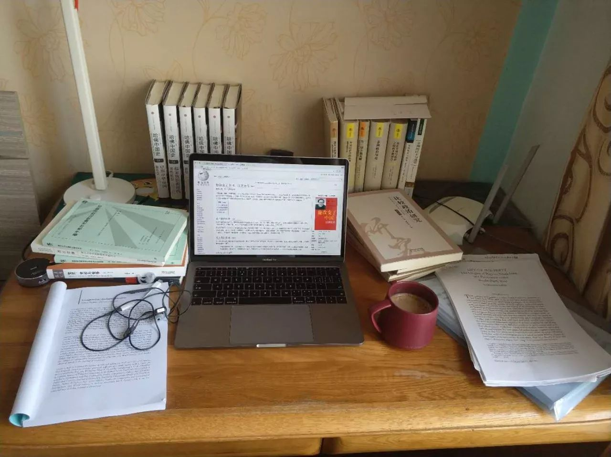
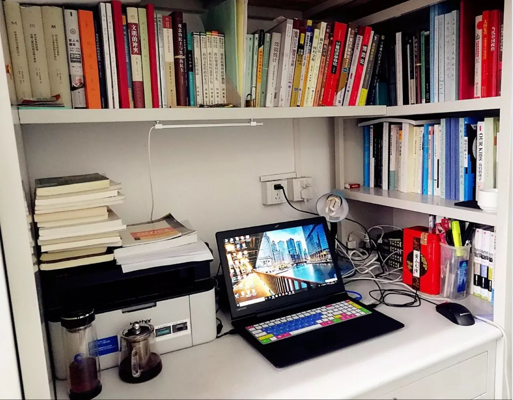
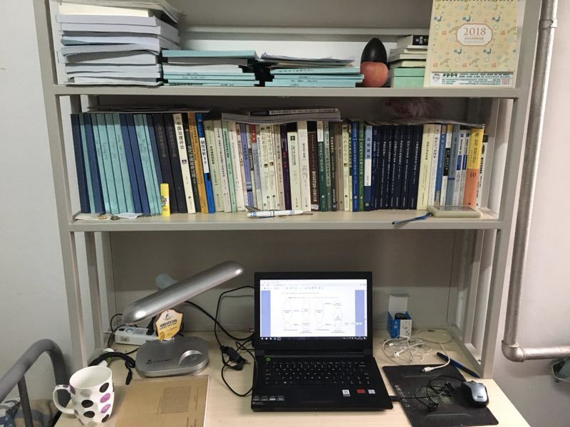
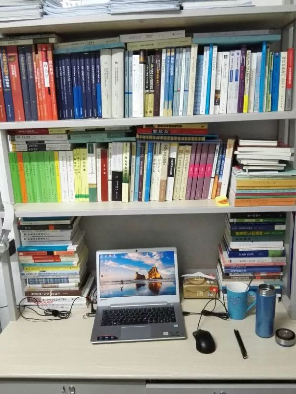
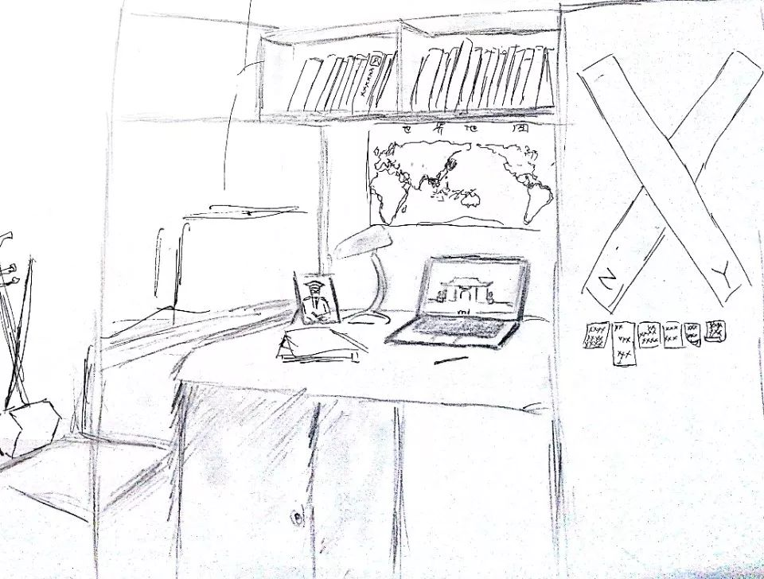

新年特辑：我们的致谢与我们的书桌
收录于合集 #新年献词 5个
**
**
我们的话
**
**
契阔阻风期，荏苒成雨别， 2017年流光迅景转成过往，只剩下几个小时的余额让我们回味徜徉。在今年春日温润的嘉气里，政观上线了。无论是在豪雨渐染笔端云霓的仲夏，还是酹酒桂子月流烟渚的金秋，抑或是高卧林下悦听雪吟的隆冬，以及现在这个揖别旧年拥抱新岁的节点，政观始终守望着政治学的田畴阡陌，分享着海内外学人带给大家的感动和思辨。师友们站在政治科学的认知边界，努力窥究着天人之际，治道轮回的那些秘而不宣的隐私，或浩瀚隽永，或况味悠长，或激扬方寸，或缜密细腻。一种风流吾最爱，稽古开新述先贤。这些浪漫的人可能没有柔情缱倦的笔触，没有刚烈果毅的澎湃，但却有着政治学者独有的涉世情怀，冷峻而犀利如水波不兴，但不失况味绵长；慷慨而稳重如沧浪万顷，但不乏胸中丘壑。在我们不揣冒昧、拜谒先贤的小传中，追念的不只是前辈的研究，更是他们对现实的关怀。纵横四海之间，我们不奢求加入熙攘狂欢的喧嚣纷扰，只希望能带来耳目一新的比较研究；爬梳数理内外，我们不热衷参与崇论宏议的理论纠葛，而醉心于介绍别开生面的量化与质性分析。政观不会效法祭獭陈鱼，洋洋万言罗列繁复，在同质化的潮流中迷失初心；政观愿取食跖勤学之能、博观约取以砥砺公号风格；追求高质量的动态编译、学人小传、文献述评将始终是我们念兹在兹的目标。新年的钟声即将敲响，政观虽幼，但在诸位师友的关怀与支持下，珍贵的东西一直在慢慢成长。
我们的书桌
受公众号“论文大焖锅”放送青年学者书桌照的启发，政观在新年来临之际，也照猫画虎推出一批研究僧书桌，展示一下国内研究僧的“生存现状”。图片均来自政观团队的部分学生成员，虽缺乏代表性，但特色迭出。当然，我们平时的书桌可能要比图里乱一（bu）些（shao）。。。

中国人民大学16级硕士生陆屹洲的书桌
“眼力好的人能在图中找出5样吃的”
（答案见评论区）

吉林大学17级硕士生赵德昊的书桌
“宿舍书桌不忍看，这是我家”

中国人民大学16级硕士生杨端程的书桌
“螺狮壳里做道场”

中国人民大学17级博士生释启鹏的书桌
“苹果后面的那个是‘埙’”

中国人民大学17级硕士生何家丞的书桌
“穷的只剩下书了”

最后某小编画了一张极具历史厚重感的书桌
“闷声做研究”
**
**
政观 2017 年文章合辑
论文编译
保守派到底在想什么？两万样本、十余国家、近百次实证研究给你答案。
还有这种操作？十分钟学会QCA，顺带复习Logistic回归
Dan Slater：改变威权主义——对苏哈托“新秩序”的案例研究
学人小传与书评
书单系列
其他
政观编辑部
原创不易，感谢支持！
微信扫一扫赞赏作者 __赞赏
已喜欢，对作者说句悄悄话
取消 __
发送给作者
发送
最多40字，当前共字
上一页 1/3 下一页
长按二维码向我转账
原创不易，感谢支持！
受苹果公司新规定影响，微信 iOS 版的赞赏功能被关闭，可通过二维码转账支持公众号。